Margaret Morton
(1948-2020)
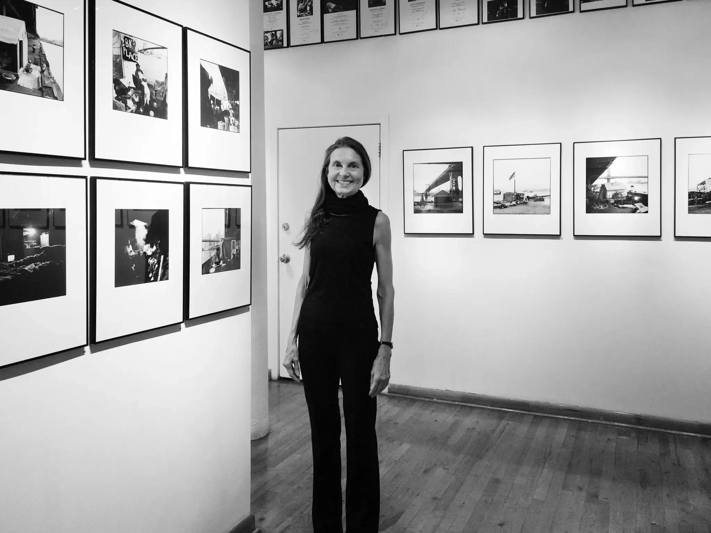
(photo courtesy of Janet Odgis)
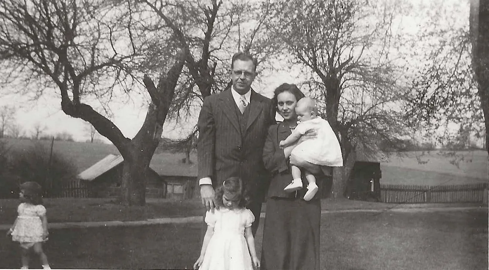
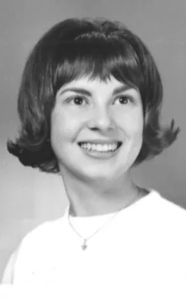
Graduation, 1967
In 1948, Margaret Willis was born in Akron, Ohio, and grew up in the nearby city of Cuyahoga Falls.
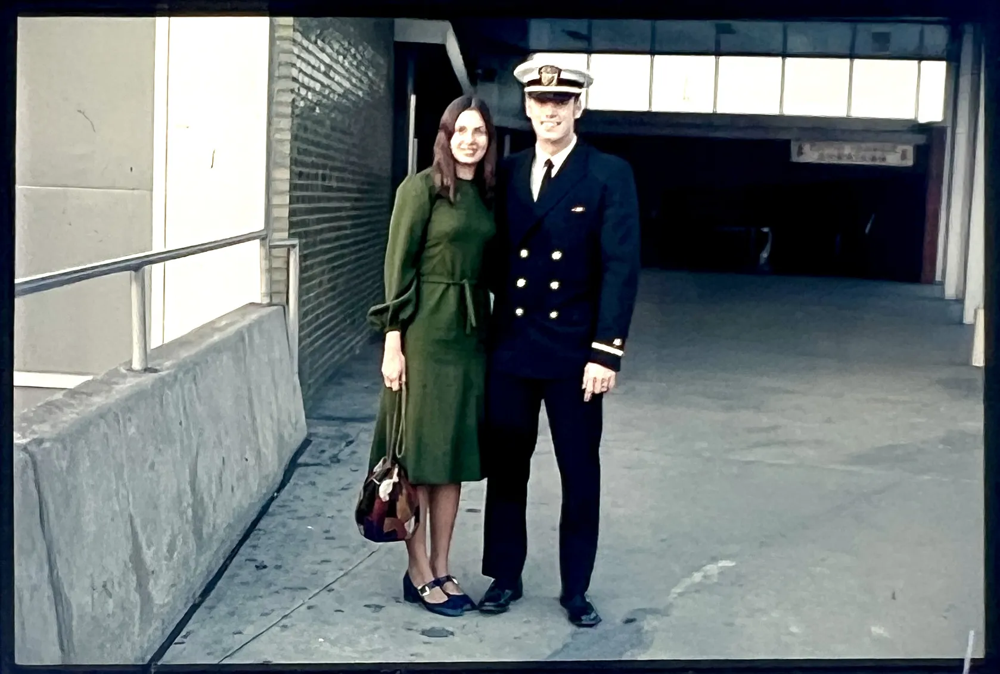
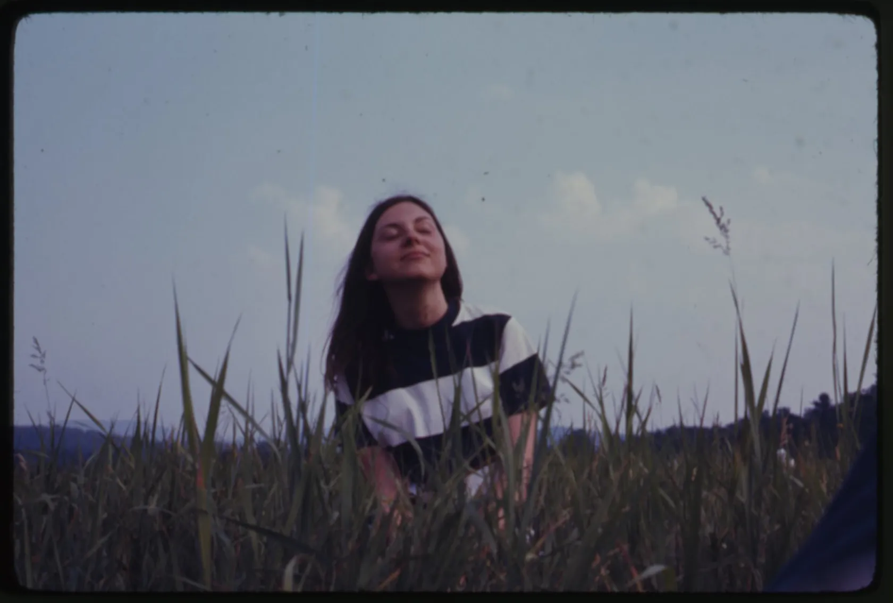
Margaret attended Kent State University from 1966 to 1970. After graduation, she married Tom Morton, her high school boyfriend, who attended Dartmouth College. Tom enlisted in the Navy, and they spent the first years of their marriage in Gaeta, Italy, where Tom was stationed.
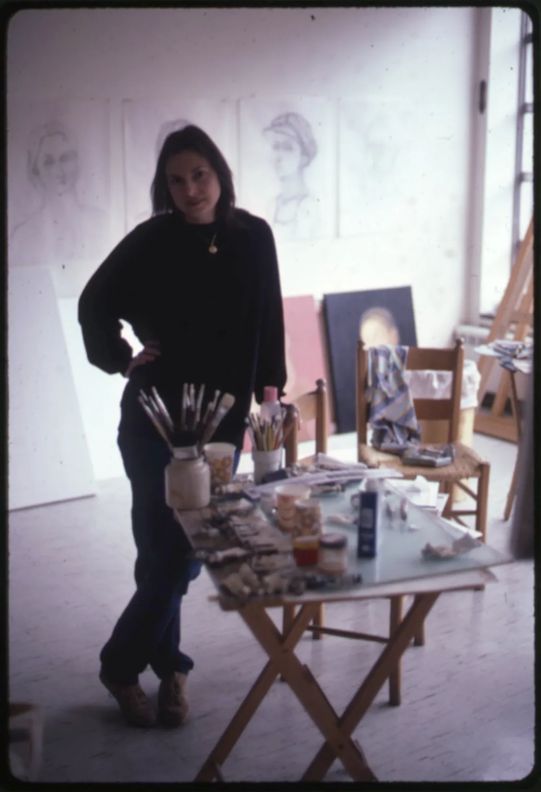
New Haven, 1986
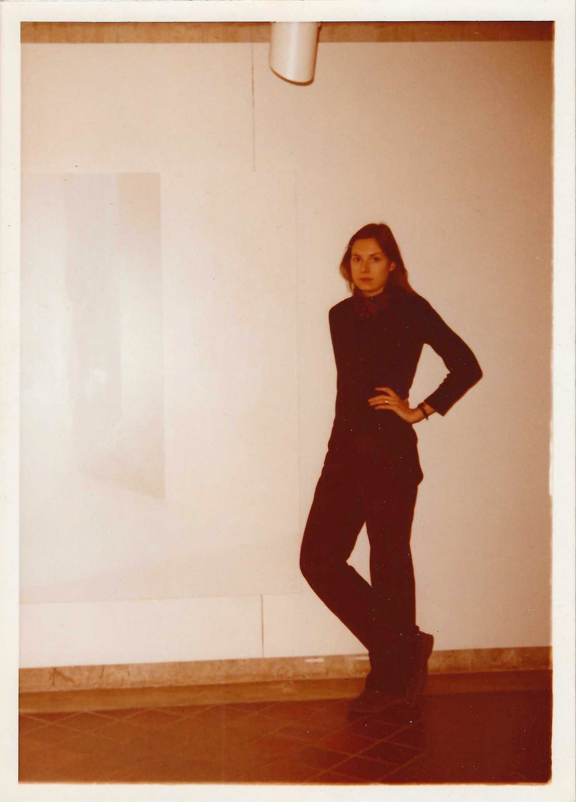
New Haven, ca. 1986
In 1975, Margaret and Tom moved to New Haven, Connecticut, where Margaret earned a master’s degree from the Yale School of Art and Tom from the Yale School of Architecture. Margaret studied graphic design and after graduating sought commercial assignments while teaching and painting. She had a studio in the offices of the renowned architect Cesar Pelli, where Tom worked.
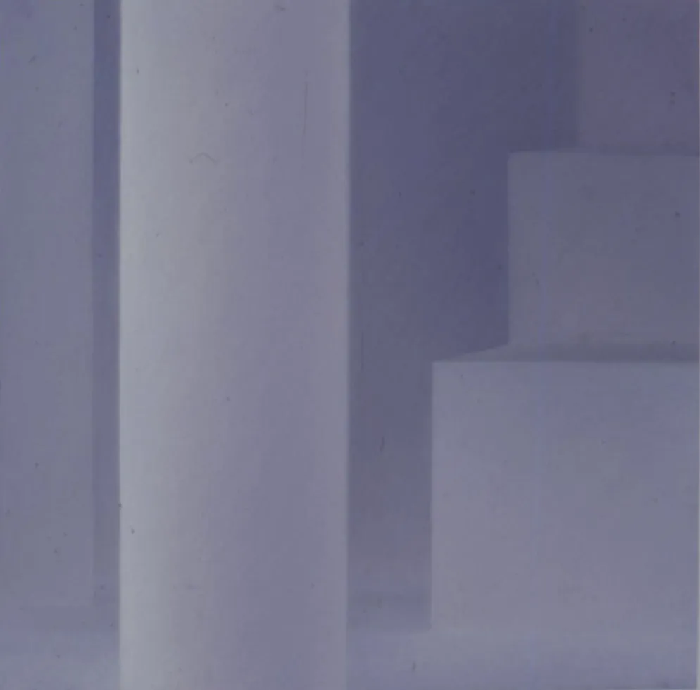
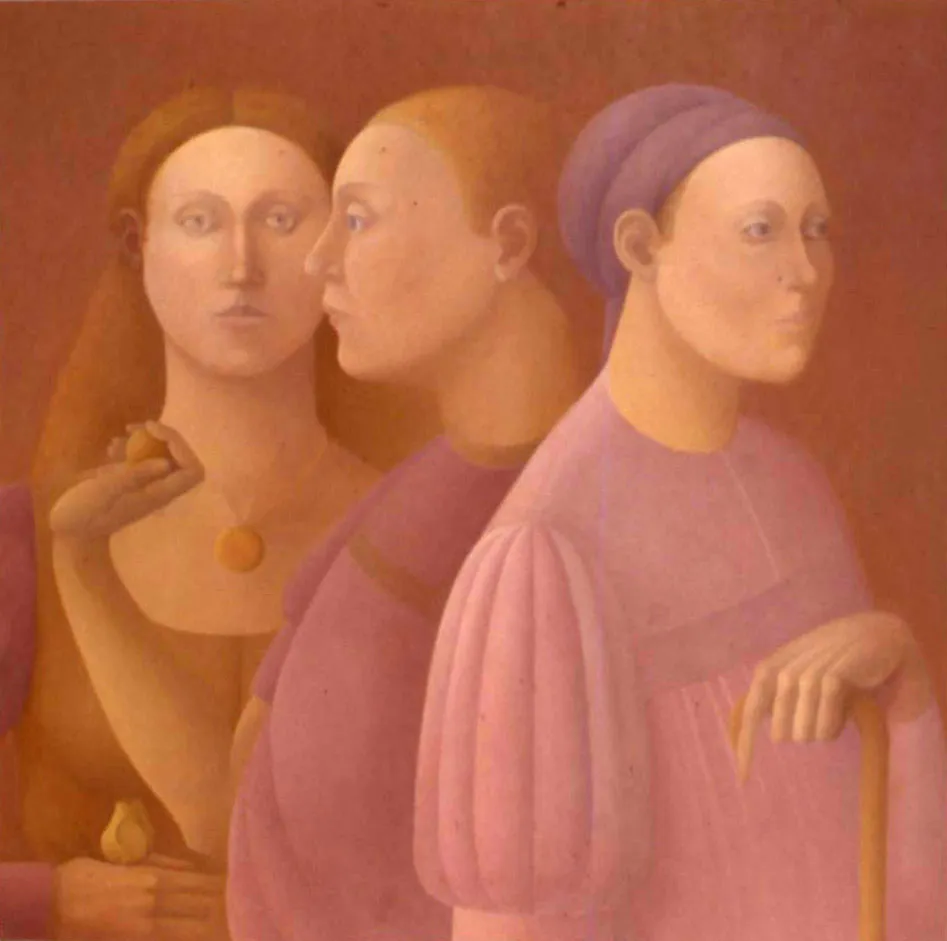
Margaret developed two bodies of work inspired by her time living in Italy, both monochrome: a series of large female heads based on Italian Renaissance painting, and “shadow paintings”, abstractions informed by Mediterranean architecture.
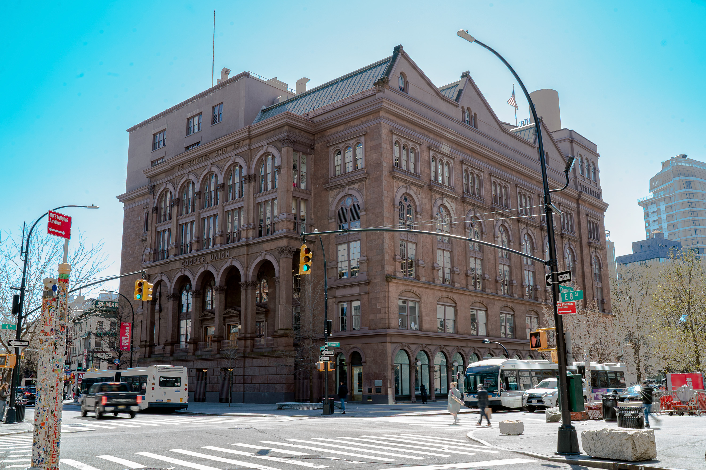
(Photo courtesy of Xuemeng Zhang)
In the early 1980s, Margaret began teaching at Cooper Union in New York City while living in New Haven. In 1985, Cooper offered Margaret a tenure track position in graphic design, and she and Tom moved to New York. Margaret was promoted to a full-time professor in 1999, and she taught at Cooper Union until she retired in 2018.
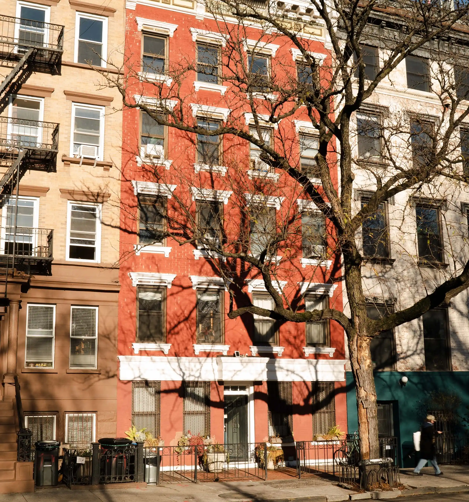
(Photo courtesy of Xuemeng Zhang)
Margaret and Tom bought an apartment in a tenement on the north side of Tompkins Square Park in the East Village a few blocks from Cooper Union.
At the time, a “tent city” built by unhoused people grew inside the park, which became the epicenter of New York’s housing crisis. In the wake of the 1988 Tompkins Square Park Riot, during which police assaulted community members rallying against a curfew, Margaret took up the camera to photograph the encampment. Although she did not intend to abandon painting, documenting communities of unhoused New Yorkers became the subject of Margaret’s art for more than a decade.
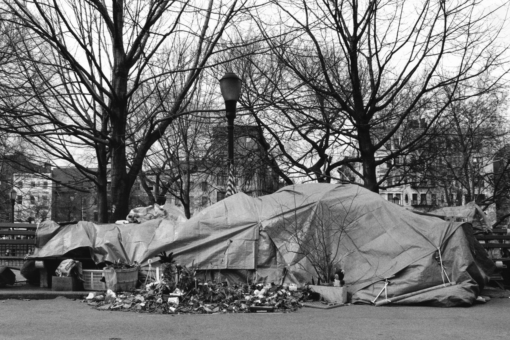
Nathaniel was known as the Mayor of Tompkins Square Park. His tent and garden were destroyed in 14-degree weather on December 14, 1989. He returned to the park and built another home – pictured here – which was destroyed on June 3, 1991, when the park closed for a two-year renovation.
From the park, Margaret followed many residents to nearby vacant lots, which in turn led her to other homeless communities throughout Manhattan. She witnessed time and again the destruction by city authorities of the homes of people she photographed and interviewed.

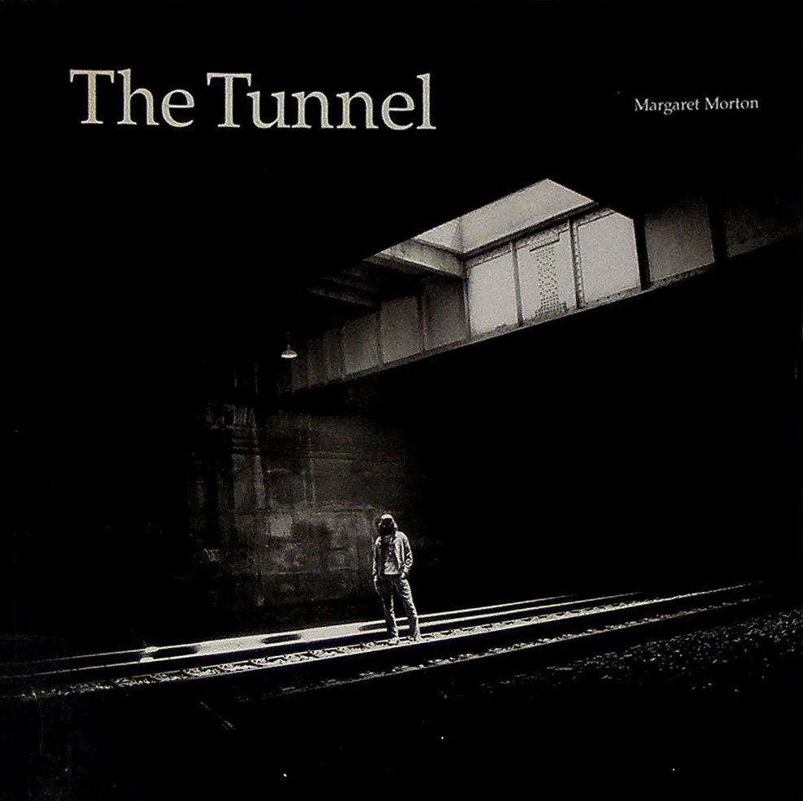
Very quickly a sense of urgency took hold, and Margaret conceived of a book she initially called “The Architecture of Despair.” But Margaret published two other books before the opportunity arose to complete it. While still actively working in field, Margaret and her friend and mentor Diana Balmori published Transitory Gardens, Uprooted Lives in 1993. Compelled in part to publish on a subject that was attracting several other writers and photographers, Margaret published The Tunnel in 1995.
Although Tom and Margaret separated at this time for reasons unrelated to her work, she was no longer the Navy wife Tom married in 1970.

By 1997, all the encampments in Manhattan were cleared, signaling the end of Margaret’s field work. In the next few years, she focused on exhibitions and preparing the book she originally envisioned, renamed Fragile Dwelling.
She was now able to see her subject in its entirety: the 1970s fiscal crisis; the chronic rise of homelessness; a municipal alliance with real estate interests, exacerbating gentrification and displacement; and crackdowns on homeless communities, accompanied by reductions in social services.
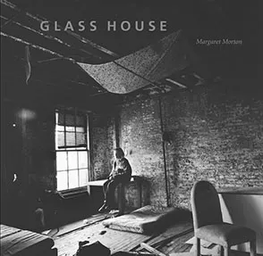
Margaret was introduced to the group of squatters renovating an abandoned glass factory in her neighborhood in 1993. Her work documenting the community was cut short after only four months, when the police stormed the building and evicted the residents. Years later, Margaret received a letter from a Glass House resident, which led her to track down the others as best she could. This led to the publication of Glass House, the last of four books devoted to New York’s housing crisis of the 1990s.

In the summer of 2006, Margaret accompanied her friend Virlana Tkacz, director of Yara Arts Group, to document sites referenced in a Kyrgyz epic poem that Virlana planned to adapt as a theater production. On their six-week journey into the mountains of Kyrgyzstan, Margaret encountered ancestral Islamic cemeteries that looked from afar like cities but were in truth only half-human in scale. After return visits and extended research, she published Cities of the Dead in 2014. This was Margaret’s first project using a digital camera.
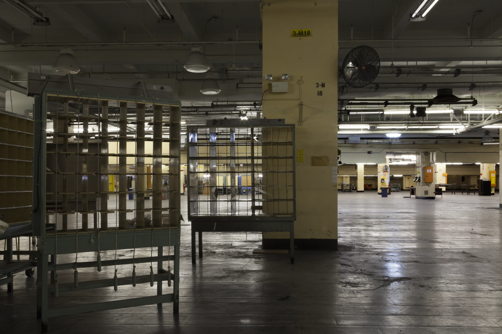
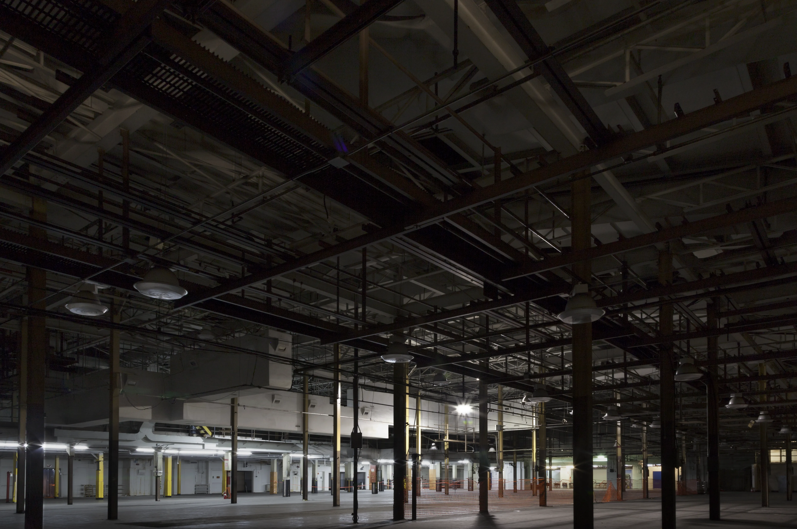
In 2012, Margaret gained access to the 1.2 million-square-foot interior of the James A. Farley Post Office Building, long abandoned and dilapidated, empty of the thousands of postal workers who had worked there. The Moynihan Train Hall on the first floor had been approved, but work had not yet begun. Wearing a hard hat and construction boots, Margaret wandered for three months throughout this ruin in the heart of Midtown Manhattan. This was her first project photographed in color.
Margaret exhibited this work in the Postmaster General’s office on an upper floor of the building and at the Architectural League of New York. She was working on a book, which sadly she had not finished at the time of her death in 2020.